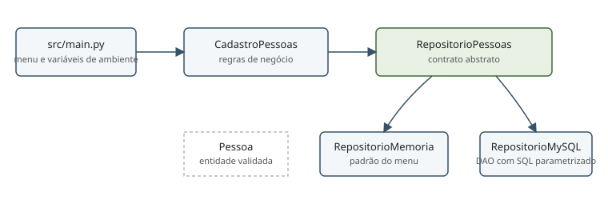
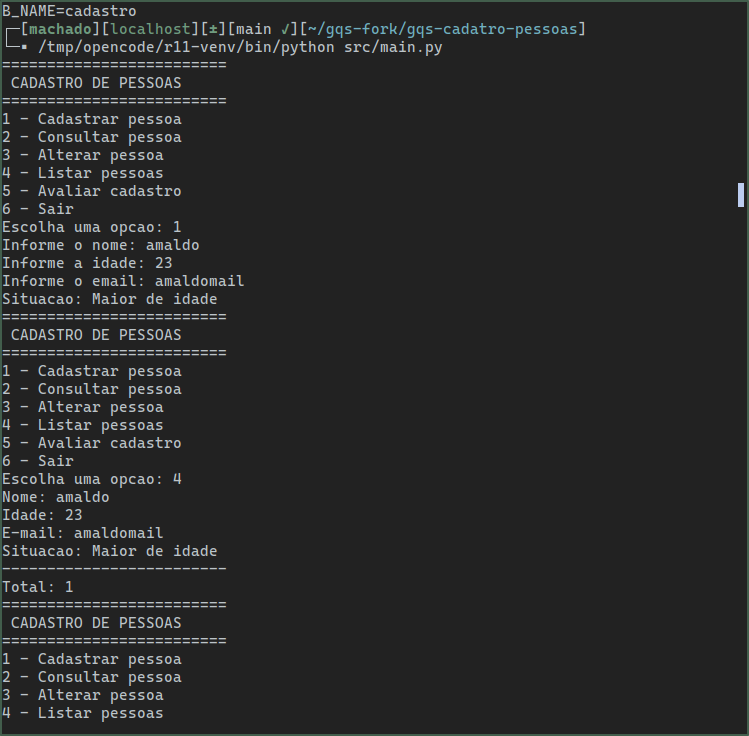
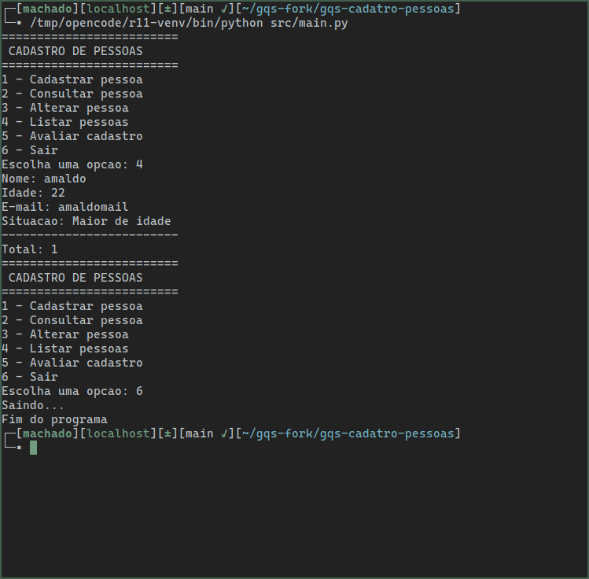

1 Repositório e participantes
O Projeto Integrador foi desenvolvido a partir do repositório disponibilizado pelo professor na Aula 1 e concentrado no repositório de Cler Andrade. O modelo de colaboração adotado foi o mesmo do Relatório 11: forks, branches locais e Pull Requests revisados por quem não escreveu o código. A Tabela 1 identifica os repositórios e os papéis de cada participante neste relatório.
| Papel | Estudante | Repositório | Observação |
|---|---|---|---|
| Origem | Juliano Rodrigo Lamb | github.com/julianolamb/gqs-cadastro-pessoas | ponto de partida da disciplina |
| A | Cler Andrade (ClerAndrade) | github.com/ClerAndrade/gqs-cadatro-pessoas | repositório principal deste relatório |
| B | Luis Felipe Machado Dutra (So1d) | github.com/So1d/gqs-cadatro-pessoas | fork de A |
Tabela 1: Repositórios envolvidos no Projeto Integrador.
As contribuições entre A e B circularam nos dois sentidos, como no Relatório 11. A separação do armazenamento em memória, com a definição do contrato RepositorioPessoas, e a persistência em MySQL saíram de B para A. O retorno da implementação do DAO de A para B foi fechado pelo Pull Request #3 e incorporado à main em e289160. As quatro contribuições estão listadas na Seção 4.
2 Evolução do Cadastro de Pessoas
2.1 Organização do código
O código entregue na Aula 1 já continha Pessoa, CadastroPessoas e a interface de linha de comando em src/main.py. Nas aulas seguintes, o projeto foi reorganizado em funções, módulos e classes, sem alterar o contrato público usado pelo menu. A Tabela 2 descreve os arquivos que passaram a compor o sistema.
| Arquivo | Responsabilidade |
|---|---|
src/pessoa.py |
entidade com validação de nome e e-mail |
src/repositorio_pessoas.py |
contrato RepositorioPessoas, com ABC e @abstractmethod |
src/repositorio_pessoas_memoria.py |
implementação em memória, padrão do menu |
src/repositorio_pessoas_mysql.py |
implementação MySQL com mysql-connector-python |
src/cadastro.py |
regras de negócio e delegação ao repositório |
src/main.py |
menu de comandos e leitura da variável CADASTRO_REPOSITORIO |
tests/ |
verificações automatizadas com PyTest |
infra/compose.yaml |
principal e réplica MySQL 8.4.13 |
infra/README.md |
instruções de subida, criação da tabela e conexão |
documentos/ |
checklists, métricas, rastreabilidade, evidências e relatórios |
Tabela 2: Arquivos do Projeto Integrador e suas responsabilidades.
A Figura 1 resume a dependência entre os módulos. O ponto central é que CadastroPessoas conversa apenas com o contrato; trocar memória por MySQL não exige mudança nas regras de negócio.

Figura 1. Relação entre main, regras de negócio, contrato e implementações de repositório.
2.2 Inspeção, métricas e refatoração
A Aula 6 registrou uma inspeção com checklist e a Aula 4 introduziu RADON. O maior bloco de complexidade estava em executar(), no menu, com índice B(8). A extração de processar_opcao() reduziu esse bloco para A(2). No Pylint, quatro regras estavam desligadas no .pylintrc (invalid-name, missing-function-docstring, missing-class-docstring e trailing-whitespace); com os nomes e as docstrings ajustados, a nota passou de 9,83 para 10,00. A Tabela 3 resume os resultados.
| Indicador | Antes | Depois | Evidência |
|---|---|---|---|
| Pylint | 9,83/10 | 10,00/10 | documentos/checklist-pylint.md |
| RADON — maior bloco | B(8) em executar() |
A(2) em processar_opcao() |
documentos/metricas-radon.md |
RADON — média em src/ |
A (1,85) | A (1,80) | documentos/metricas-radon.md |
Blocos B/C em src/ |
presentes | nenhum | saída de radon cc src -a -s |
| Testes | 23 | 27 | saída de pytest -q |
Tabela 3: Comparação das métricas antes e depois das correções.
A folha original de inspeção da Aula 2, com os nomes CLER, GUILHERME D., GABRIELA e LUIS, foi preservada em documentos/evidencias/inspeção-aula2.pdf. Os resultados do checklist preenchido estão em documentos/checklist-inspecao-preenchido-aula6.md.
2.3 Padronização e prevenção de defeitos
O .pylintrc passou a declarar py-version=3.15, que é a versão instalada no ambiente de execução. O CONTRIBUTING.md deixou de apontar o repositório do professor como origem do clone e passou a descrever o fluxo de branch, commit, push e Pull Request usado de fato. O README.md foi corrigido porque mandava executar python cadastro.py, enquanto o ponto de entrada sempre foi src/main.py.
O pre-commit foi ampliado para três verificações. Antes havia apenas Pylint, executado com o Python do sistema; agora os três hooks apontam para .venv/Scripts/python.exe. As verificações são Pylint no pacote src, PyTest completo e RADON em modo somente leitura. O Quadro 1 mostra a saída das ferramentas na última rodada.
python -m pytest -q
........................... [100%]
27 passed in 0.15s
python -m pylint src
Your code has been rated at 10.00/10 (previous run: 10.00/10, +0.00)
python -m radon cc src -a
49 blocks (classes, functions, methods) analyzed.
Average complexity: A (1.7959183673469388)
pre-commit run --all-files
pylint (src).........................................(no files to check)Skipped
pytest...................................................................Passed
radon cc (somente leitura)...............................................Passed
Quadro 1. Saída das verificações automatizadas na revisão final.
3 Persistência e infraestrutura
3.1 Contrato e implementação MySQL
A Aula 11 introduziu a separação entre regras de negócio e armazenamento. O contrato RepositorioPessoas define cadastrar(), buscar(), listar() e alterar(). A implementação em memória continua sendo o padrão do menu; a implementação MySQL é ativada por CADASTRO_REPOSITORIO=mysql. A Tabela 4 lista as variáveis lidas por repositorio_pessoas_mysql.py.
| Variável | Uso | Valor |
|---|---|---|
DB_HOST |
host do MySQL | localhost |
DB_PORT |
porta mapeada no compose | 3307 |
DB_USER |
usuário | root |
DB_PASSWORD |
senha lida do ambiente local | definida em .env, nunca versionada |
DB_NAME |
banco | cadastro |
Tabela 4: Configuração da conexão MySQL.
A paginação usa LIMIT e OFFSET com uma contagem separada por COUNT(*), sem recurso de contagem embutido na consulta principal. As demais operações usam parâmetros (%s) em vez de concatenação de strings. A confirmação é feita com conn.commit() após cada escrita e conn.rollback() em caso de falha; conn.close() é chamado em finally. Esses pontos foram revisados no Pull Request #3, originado da contribuição de B para A.
3.2 Docker Compose
O arquivo infra/compose.yaml define um servidor principal e uma réplica MySQL 8.4.13. A Tabela 5 registra os parâmetros conferidos na revisão final.
| Item | Configuração verificada |
|---|---|
| Imagem | mysql:8.4.13 |
| Serviço principal | porta 3307 no host, 3306 no contêiner |
| Serviço réplica | porta 3308 no host, 3306 no contêiner |
| Volumes | principal-data e replica-data, nomeados |
| Rede | rede bridge padrão do Compose |
| Variáveis de ambiente | MYSQL_ROOT_PASSWORD obrigatória via ambiente, MYSQL_DATABASE |
| Comando da réplica | CHANGE REPLICATION SOURCE TO com SOURCE_AUTO_POSITION=1 e GET_SOURCE_PUBLIC_KEY=1 |
| Parâmetros do principal | --log-bin=mysql-bin, --server-id=1, --gtid-mode=ON |
| Parâmetros da réplica | --relay-log=relay-bin, --server-id=2, --log-replica-updates=ON |
Tabela 5: Configuração dos contêineres MySQL.
A senha do banco não aparece mais no arquivo versionado: o compose exige MYSQL_ROOT_PASSWORD no ambiente e infra/.env.example serve apenas de modelo. A validação local foi feita com docker compose config --quiet, que encerrou com código 0. O daemon do Docker não estava disponível nesta máquina (docker info falhou ao conectar em npipe:////./pipe/dockerDesktopLinuxEngine), por isso a execução ponta a ponta não foi repetida aqui. A execução com MySQL real foi feita em ambiente Linux com Podman e está registrada no Relatório 11. Neste repositório, o DAO foi verificado com um conector falso em tests/test_repositorio_mysql.py, que cobre paginação, mapeamento de linhas e o uso de commit() e rollback().
A conferência no canal de replicação foi feita com o comando SHOW REPLICA STATUS\G, que apresenta Replica_IO_Running, Replica_SQL_Running e a posição do relay log. A Figura 6 registra essa verificação.
3.3 Verificação da migração
A migração de memória para MySQL foi exercitada sem alterar CadastroPessoas. O teste test_alterar_delega_ao_repositorio verifica que alterar() monta um novo objeto Pessoa e chama repositorio.alterar(). Esse desenho evita que a regra de negócio conheça detalhes de SQL, conexão ou autoincremento. A suíte completa, incluindo o DAO com conector falso, está listada no Quadro 1.
4 Colaboração por fork e Pull Request
A colaboração foi registrada em quatro Pull Requests. A Tabela 6 apresenta a direção, a autoria e o resultado de cada contribuição.
| PR | Direção | Título | Autor | Resultado |
|---|---|---|---|---|
| #1 | A → B | Padronização com Pylint e onboarding | Cler Andrade | mesclado |
| #2 | A → B | Refatoração RADON e infraestrutura de qualidade | Cler Andrade | mesclado |
| #3 | B → A | DAO MySQL e testes automatizados | Luis Felipe Machado Dutra | mesclado em e289160 |
| #1 (B) | B → A | Retorno da evolução do cadastro | Luis Felipe Machado Dutra | revisado e incorporado via #3 |
Tabela 6: Pull Requests da atividade.
Os pontos revisados em #3 foram a ausência de delegação em alterar(), o uso direto de mysql.connector no programa principal e a falta de fechamento de cursor e conexão. A versão mesclada usa o contrato, a variável de ambiente e o fechamento em finally.
Os commits de consolidação deste repositório estão na Tabela 7.
Os commits de consolidação deste repositório estão na Tabela 7.
| Commit | Data | Mensagem |
|---|---|---|
2441169 |
19/11 | refactor: reduz complexidade |
4629f9f |
19/11 | chore: configura Docker Compose e dependências de qualidade |
73e525c |
19/11 | test: amplia cobertura com pytest e dao mysql |
b50847c |
19/11 | fix: alinha versao do python na configuracao do pylint |
ac055fd |
19/11 | docs: atualiza documentacao, metricas e rastreabilidade |
2f152d9 |
19/11 | docs: corrige texto e regera relatorio em PDF |
ab1ce09 |
20/11 | test: adiciona testes da entidade Pessoa |
13011c5 |
20/11 | fix: preserva modelo de checklist e adiciona registro preenchido |
99d1cd5 |
20/11 | chore: mapeia identidade do laboratorio para Cler Andrade |
d9f037c |
21/11 | docs: adiciona capa UTFPR e reescreve relatorio como diario |
Tabela 7: Commits de consolidação no repositório de A.
5 Autoria e rastreabilidade
Três commits da máquina do laboratório foram gravados com a identidade L16-M01 <l16-m01@laboratorio.local>. Para que a autoria apareça corretamente sem alterar objetos já publicados, foi adicionado o arquivo .mailmap e ativada a opção log.mailmap. A Tabela 8 mostra o mapeamento aplicado.
| Identidade gravada | Identidade exibida | Mecanismo |
|---|---|---|
L16-M01 <l16-m01@laboratorio.local> |
Cler Andrade <115158502+ClerAndrade@users.noreply.github.com> |
.mailmap + git config log.mailmap true |
| Juliano Rodrigo Lamb | Juliano Rodrigo Lamb | commit original do professor, ponto de partida |
| Luis Felipe Machado Dutra | Luis Felipe Machado Dutra | commit original do colega, evidência da colaboração |
Tabela 8: Identidades consideradas na auditoria de autoria.
Não houve reescrita desses objetos porque eles sustentam os Pull Requests mesclados. A auditoria completa está em documentos/auditoria-final.md, os dados de cada prática em documentos/rastreabilidade.md e a tag v1.0.0-entrega marca a versão final. O Quadro 2 mostra a saída recente de git log --use-mailmap.
d9f037c docs: adiciona capa UTFPR e reescreve relatorio como diario
2e5e1bb docs: reescreve relatorio como diario de desenvolvimento
1eb67e0 docs: registra auditoria do enunciado final e dos slides
13011c5 fix: preserva modelo de checklist e adiciona registro preenchido
ab1ce09 test: adiciona testes da entidade Pessoa
3a39217 docs: incorpora checklist de inspecao da aula 6
99d1cd5 chore: mapeia identidade do laboratorio para Cler Andrade
Quadro 2: Trecho de git log --use-mailmap --oneline.
O enunciado final também pedia um commit próprio por semana letiva, com mínimo de 17 semanas. O histórico deste repositório começa em 14/10 e os commits anteriores pertencem ao professor. Não foi inventada data antiga nem criado commit vazio para completar o quadro; a limitação está registrada em documentos/plano-semanal.md e documentos/rastreabilidade.md. Fora esse ponto, a main está sincronizada com o GitHub e o último git status --short --branch retornou apenas ## main...origin/main.
6 Evidências de execução
As capturas a seguir foram extraídas do Relatório 11 entregue na disciplina e copiadas sem alteração para documentos/evidencias/. Elas registram a execução com MySQL em ambiente Linux com Podman, conforme relatado pelo colega, e complementam os testes automatizados executados neste repositório.

Figura 2. Inclusão de pessoa pelo menu de comandos.

Figura 3. Alteração de uma pessoa já cadastrada.

Figura 4. Listagem após as operações de escrita.

Figura 5. Consulta das linhas gravadas no banco MySQL.

Figura 6. Conferência da replicação com SHOW REPLICA STATUS\G.

Figura 7. Histórico de commits e merges no repositório de A.

Figura 8. Recorte do histórico no repositório de B, com a integração da contribuição.
7 Considerações finais
A evolução do Cadastro de Pessoas deixou o projeto mais próximo do que foi pedido nas Aulas 1 a 12. O contrato de repositório permitiu trocar memória por MySQL sem mexer nas regras de negócio; as métricas e o Pylint identificaram pontos que passaram por refatoração; o pre-commit e o PyTest deram uma forma repetível de verificar o código antes do commit. A colaboração por fork e Pull Request ficou registrada nos quatro PRs e no merge de e289160.
Dois pontos ficaram como ressalva explícita: a execução do MySQL com Docker não foi repetida nesta máquina por indisponibilidade do daemon, e o requisito das 17 semanas não foi preenchido retroativamente. Ambos estão documentados, sem tentativa de mascarar a ausência com histórico fabricado. O relatório do colega (Relatório 11) permanece como evidência da execução com banco real e da colaboração em sentido inverso.